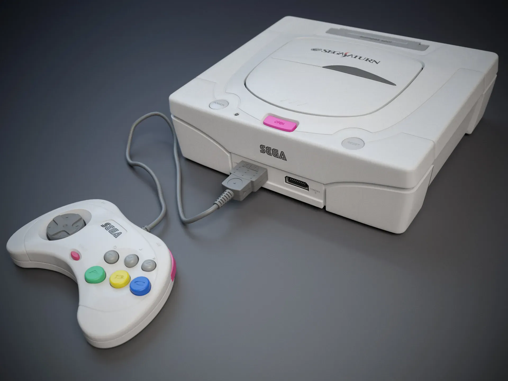

The 32-Bit Powerhouse
Despite its complex architecture, the Saturn remains the ultimate machine for 2D gaming purists and arcade enthusiasts, home to some of the best sprites ever rendered.

The Power
Dual-CPU Architecture
With two SH-2 RISC processors, it was a beast for 2D, though a challenge for 3D developers of the time.
The Legacy
2D Perfection
The undisputed sanctuary for fighters and "shmups". With the 4MB RAM cartridge, games like X-Men vs. Street Fighter were arcade-perfect.
The Demise
Complexity
The lack of a proper 3D Sonic game at launch and high manufacturing costs allowed competition to gain the lead.
Pro Tip for Collectors
Consider an "Action Replay" cartridge to play Japanese imports, which are often more affordable than Western versions.